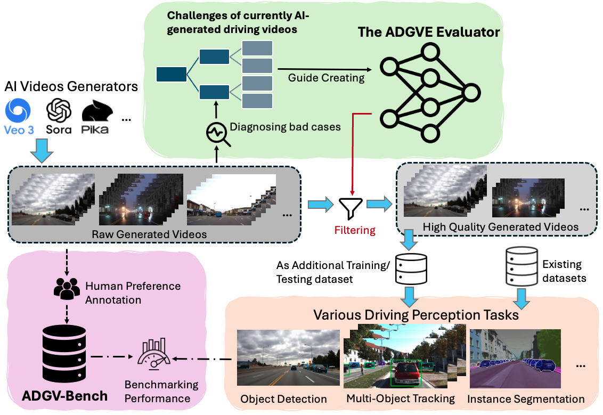

近年のテキストから動画を生成するモデルは、自然言語プロンプトから高解像度の走行シーンを生成することを可能にしている。こうしたAI生成走行動画（AIGV）は、自動運転（AD）において実世界データやシミュレータデータに対する低コスト・スケーラブルな代替手段として期待されている。しかし重要な問題が残る：「このような動画はADモデルの学習と評価を信頼できる形でサポートできるか？」
本論文では、この問いを系統的に検討する診断フレームワークを提案する。まず、視覚的アーティファクト・物理的に非現実的な動き・交通セマンティクスの違反を含むAIGVの頻出障害モードの分類法を導入し、これらが物体検出・追跡・インスタンスセグメンテーションに与える負の影響を示す。この分析を支援するために、人間の品質アノテーションと複数の知覚タスク向けの密なラベルを持つ走行専用ベンチマークADGV-Benchを構築する。次に、静的セマンティクス・時間的手がかり・車線遵守信号・VLM誘導推論を単一の品質スコアに組み合わせた走行専用評価器ADGVEを提案する。実験により、生のAIGVを盲目的に追加すると知覚性能が低下する可能性があるが、ADGVEでフィルタリングすることで一般的な動画品質評価メトリクスとダウンストリームADモデルの両方が一貫して改善され、AIGVが実世界データの有益な補完となることが示された。
自動運転は知覚モデルの学習と評価のために大規模・多様・高品質な動画データを必要とする。従来のパイプラインは実世界のフリートデータまたはCARLAなどのゲームエンジンベースのシミュレータに依存しており、これらは多大なエンジニアリング作業を必要とし、多様性や制御可能性に限界がある。近年のテキストから動画を生成するモデルは、プロンプトから直接高解像度の走行シーンを合成することを可能にした。
プロンプトのみのAIGVは、生成コストが低く、スクリプト化が容易で、原則としてレアなエッジケースとオープンワールドの組み合わせを大規模にカバーできる。AIGVはプロンプトのみのテキスト入力から生成でき、実データ・シミュレータ・AD特化型動画ジェネレータと比較してコストが圧倒的に低い。
しかし重要な問題が残る：これらのAI生成動画を実世界ADモデルの学習または評価に安全に使用できるか？ 既存の動画ジェネレータは、交通シーンで必要とされる構造的・セマンティック的・行動的な正確さに最適化されていない。実際には、AIGVは視覚的アーティファクト・物理的に不可能な動き・車線・ルール違反・一貫性のないオブジェクト動作を頻繁に示す。このようなクリップを学習または評価に安易に混入すると有害なノイズが注入されるが、現在のベンチマークと汎用的な動画品質評価（VQA）ツールはAD特有の欠陥を検出するよう設計されていない。
本論文の主要な貢献は以下の通りである：
AI生成動画を走行データのソースとして探索する研究が始まっている：
AI生成動画品質の評価は活発な研究領域である。FIDやFVDなどの古典的なメトリクスは分布の類似性を測定するが、多くの時間的または物理学的障害に対して感度が低い。最近のAIGVベンチマーク（AIGVE-Toolなど）は時間的安定性と視覚的一貫性のためのより豊かなプローブを導入しており、LightVQA+やGSTVQAなどのVQAモデルは汎用的な知覚スコアを提供する。しかし、これらの取り組みは主にドメイン非依存であり、交通ルール・車線遵守・物理的に妥当なエゴモーションを明示的に強制しない。
nuScenes・Argoverse 2・KITTIなどの実世界ADデータセットはセンサー忠実度とアノテーション精度を重視し、CARLAやMetaDriveなどのシミュレータは完全なラベルを持つ制御可能な合成データを提供する。しかし、これらのソースはスケールが難しく、生成動画モデルによって導入される新しい障害モードに直接対処しない。低品質のAIGVは、非現実的な動きパターン・歪んだオブジェクト・セマンティック的に誤った挙動を学習に注入し、モデルの安全性を潜在的に低下させる可能性がある。本研究は、プロンプトのみのAIGVが検出・追跡・セグメンテーションに与える影響を系統的に診断し、ADGV-BenchとADGVEをAVの学習または評価に使用される前に有害なサンプルをフィルタリングするための品質対応パイプラインとして提案することでこのギャップを埋める。
AI生成走行動画（AIGV）を自動運転（AD）の学習または評価データとして使用する前に、まず典型的な障害モードを診断する。生成動画モデルの最近の進歩にもかかわらず、AIGVはダウンストリーム知覚に有害である可能性のある微妙だが系統的なアーティファクトを依然として示す。PikaやSoraなどの主要モデルによって生成された多数の交通動画を調査し、定性的なエラー分析を実施した。
これらの観察に基づき、AI生成交通シーンの課題の分類法を時空間リアリズムとセマンティック・行動リアリズムの2軸で整理して提案した。この2つの軸は汎用的な動画忠実度と走行特有の正確性の両方を捉える：
分類法に基づき、各AI生成走行動画にスカラー品質スコアと解釈可能なサブスコアを割り当てる走行専用評価器ADGVEを設計する。
ADGVEは動画をM=8の等長クリップに分割し、各クリップの中心フレームをキーフレームとして取得する。ADGVEは2つの補完的な粒度で動作する：
ADGVEのコンポーネントは以下の通りである：
すべての手がかりは最終的に全体的な走行認識スコア S_overall ∈ [0,1]に融合される。S_overall > 0.2のクリップを「高品質」とマークして候補として扱う。
車線遵守スコアは3つの正規化されたコンポーネントを組み合わせる：
障害モードを系統的に研究し、ADGVE評価器を公正に評価するために、ADGV-Benchを構築した。ADGV-Benchは以下を特徴とするプロンプト駆動・モデル非依存のベンチマークである：
ビデオ生成指示は環境（E）・天気（W）・エゴ挙動（B）・シーンダイナミクス（D）の4つの要因に分解される。構造化テンプレートとフリースタイルプロンプトの2つの生成戦略を使用する。
アノテーションプロトコルはKITTIに倣い、各生成動画に対して3つの交通カテゴリ（車両・歩行者・自転車）の2Dオブジェクトバウンディングボックスとトラック、5つのインフラカテゴリ（エゴ車線・他車線・歩道・縁石・硬物体）のポリゴンインスタンスマスクをアノテーションする。さらに各バウンディングボックスに離散的な信頼度ラベル（高・中・低）を付与してオブジェクトがAI生成動画でどの程度明確に描画されているかを反映する。
ADGVEが有用なAI生成走行動画を信頼できる形で識別できるかどうかを検証した。Pika・Sora・Veo 3の3つのプロンプトのみのジェネレータを対象とし、各モデルから50のプロンプトをランダムにサンプリングし、プロンプトごとに5秒の走行クリップを1本生成した。すべてのクリップについてADGVEスコアを計算し、S_ADGVE > 0.2のもののみを保持した。次に、生のセットとADGVEフィルタリングされたセットの両方を、様々な既存VQAおよびAIGVEメトリクスで評価した。
実験結果（Tab. 4）では、ADGVEフィルタリングにより3つのジェネレータすべてで歪みおよび時間的・物理的なメトリクス（SimpleVQA・GSTVQA・CLIPTemp・VideoPhy・VideoScoreなど）が一貫して改善された。また、DSGScoreやVIEScoreなどのアライメント指向メトリクスの多くも向上した。重要なことに、フィルタリング後のADGVEスコア自体はすべてのモデルでほぼ2倍になり、これらの向上は独立したメトリクスの改善と良好に相関していた。この実験によりADGVEがプロンプトのみのAIGVのモデル非依存フィルタとして機能することが示された。
ADGVEの品質スコアがコアの走行知覚タスクのニーズと整合しているかどうかを評価した：
ドメイン内実験（ADGV-Bench）： 物体検出・多物体追跡・インスタンスセグメンテーションの代表的なモデルを、生のADGV-Bench学習セットまたはADGVEフィルタリングバージョンで学習し、同じテストセットで評価した。すべてのタスクとモデルで、ADGVEフィルタリングクリップを使用することで一貫して精度が向上した。時間的フリッカーや非現実的な動きのあるクリップを除去することが学習を直接安定化させるため、シーケンスベースの追跡で特に顕著な改善が得られた。
クロスデータセット転送（KITTI/KITTI-360）： ADGV-Benchを実世界ベンチマークのAI生成データの補助ソースとして使用した場合、生のADGV-BenchをKITTIやKITTI-360と単純に混合するとより大きな学習セットにもかかわらず実データのみでの学習と比較してパフォーマンスがわずかに低下した。これはAI生成走行動画の主要な課題を確認するものである：品質管理なしでは系統的なノイズを導入し、ダウンストリーム知覚を悪化させる可能性がある。対照的に、ADGVEフィルタリングサブセットで補強するとこのトレンドが逆転し、検出とインスタンスセグメンテーションの両方で実データベースラインを明確に上回る結果が得られた。
これらの実験はADGVEが走行シナリオのタスク関連品質評価を提供し、そのフィルタリングによりAI生成動画が実世界データセットに対して有害ではなく有益な補完となることを示している。プロンプトのみのAIGVの低い限界コストと事実上無制限のボリュームを考慮すると、ADGVEが最終的にこのパラダイムを実用的に活用できるようにする重要な品質ゲートを提供している。
ADGVEのどのコンポーネントが最も重要で、フィルタリング閾値に対する結果の感度はどの程度かを理解するためのアブレーション研究を実施した。評価にはスピアマン順位相関係数（SRCC）を使用し、予測スコアと人間の評価との単調な一致を測定した（SRCC=1は完全な一致、SRCC=0はランダムな順位付けに対応）。
全体的な品質スコアS_ADGVEはτ=0.2のデフォルト閾値を採用している。τ ∈ {0.1, 0.2, 0.3}での閾値感度を調査した結果：
ADGV-Benchのオブジェクトアノテーション中に、各バウンディングボックスに離散的な信頼度ラベル（高・中・低）を付与した。ADGVEフィルタリングのパフォーマンスと人間のオブジェクトレベルの品質評価を比較した結果、ADGVEフィルタリングバージョンは高信頼度アノテーションのみを使用したバリアントと同等の結果を達成し、人間のきめ細かいオブジェクトレベルの品質判断に近い自動フィルタリングが可能であることが示された。
本研究では、プロンプトのみのAI生成走行動画が自動運転知覚を信頼できる形でサポートできるかどうかを検討した。人間の品質ラベルとダウンストリームタスクを持つ走行専用ベンチマークADGV-Benchと、各クリップに単一の品質スコアを割り当てる走行専用評価器ADGVEを導入した。
ADGVEは既存のVQA/AIGVEメトリクスと整合し、有害なサンプルをフィルタリングし、フィルタリングされた動画で実データセットを補完した際に検出・追跡・セグメンテーションを一貫して改善する。全体として、本研究の結果はフィルタリングされていないAIGVのリスクを明らかにし、ADGVEが走行知覚パイプラインで大規模な生成動画を安全に使用するための実用的なゲートキーパーであることを示している。
本セクションでは、各課題タイプの視覚的な障害事例を追加で示す。500本以上の動画（60,000フレーム以上）をPika・Sora・Veo 3・Hunyuanなどの人気のある動画ジェネレータから収集し、多様な環境・天気条件・交通レイアウトをカバーした。低品質サンプルを手動でスクリーニングし、グループ化した結果、6種類の課題タイプからなる分類法を提案した。
これらの問題は主要な知覚機能を直接損なう：
そのため、生のAI生成動画を自動運転の学習または評価データとして無分別に使用すると、有用な拡張を提供するのではなく有害なバイアスを導入し、パフォーマンスを低下させる可能性がある。
動画生成指示は環境（E）・天気（W）・エゴ挙動（B）・シーンダイナミクス（D）の4つの要因に分解される。以下の2つの生成戦略を使用する：
各指示は自然言語プロンプトとして具体化され、ADGV-Benchで考慮されるすべてのプロンプトのみの動画ジェネレータに送信される。これにより、モデル間の違いが基礎となる指示セットではなく、生成動作から来ることが保証される。
KITTIに倣い、各生成動画に対して以下のアノテーションを実施する：
これらのラベルは物体検出・多物体追跡・インスタンスセグメンテーション・車線構造分析などのダウンストリーム知覚タスクをサポートする。
静的ブランチはオブジェクトとインフラの事前情報を抽出し、時間的ブランチはトラックと動きを推定し、レンダラーとプロンプトビルダーがこれらの事前情報をVLM対応入力とサマリーに変換する。視覚バンドルは、キーフレームトリプレット・ROIクロップ・クリップペア・マルチレベルサブクリップを含む。
車線遵守スコアs_laneは3つの正規化コンポーネントを固定重みで組み合わせる（w_center=0.4、w_solid=0.3、w_cross=0.3）：
全体的な品質スコアS_ADGVEによって生成クリップを学習に保持するかどうかを決定する。デフォルト閾値τ=0.2を採用する。τ ∈ {0.1, 0.2, 0.3}での分析により、中間閾値τ=0.2が最良のトレードオフを提供することが分かった。低閾値は多くのクリップを保持するが多くの低品質動画を許容し、高閾値は非常にクリーンなサブセットを生成するがカバレッジを大幅に削減する。
ADGV-Benchオブジェクトアノテーション中に、各バウンディングボックスにオブジェクトがAI生成動画でどの程度明確に描画されているかを反映する離散的な信頼度ラベル（高・中・低）を付与した。これらのラベルは幾何学的歪み・テクスチャアーティファクト・カテゴリ曖昧性に関する人間の判断を暗黙的にエンコードする。実験結果（Tab. 14）は、ADGVEフィルタリングのパフォーマンスが高信頼度アノテーションのみを使用するバリアントと同等であることを示しており、自動フィルタリングが人間のきめ細かいオブジェクトレベルの品質評価に近づけることができることを示している。